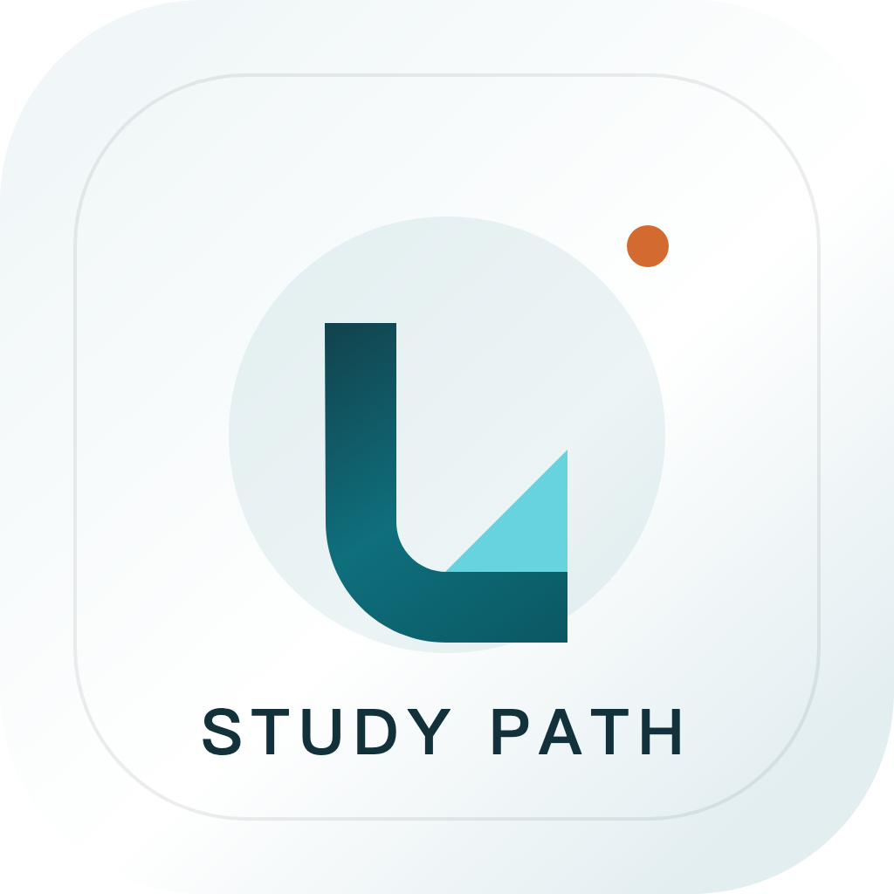

单次定位报告
29 元起适合快速获得一次完整申请定位：选校梯度、风险点、补强建议和 90 天计划。

留学宝 留学申请定位报告Access
适合快速获得一次完整申请定位：选校梯度、风险点、补强建议和 90 天计划。
适合已经准备申请的人：围绕目标地区和专业生成更细的材料优先级与项目筛选方向。
适合多地区、多专业或多轮修改使用，适合在不同申请方案之间做自动对比。
适合目标名校本科、硕士或博士申请的人。从选学校、定项目、梳理背景、申请材料到拿到录取通知书，提供人工一对一陪跑辅导。
用户可以先用激活码生成自动报告，再决定是否升级到名校本硕博人工一对一辅导。后续可以接入自动支付和自动发码。
Case Gallery
如果成绩不占优势，报告会优先判断目标档次是否过冲，再把补强重点放到课程项目、解释材料、保底项目和时间规划上。
不是简单说“能不能转”，而是拆成先修课、项目经历、实习证明和文书主线，判断申请材料能否支撑目标方向。
报告会把申请费、地区成本和录取风险放在一起看，避免把预算全部花在不稳定的冲刺项目上。
Report Preview
把目标分为冲刺、匹配、保底三层，避免只盯排名导致申请组合失衡。
根据专业方向判断科研、实习、竞赛、作品集或社会影响力哪一项最该补。
把领导力、研究倾向、执行力、表达力与适合的项目类型连起来。
匿名样例：双非一本，均分 86，雅思 7.0，一段互联网产品实习，一个数据分析课程项目，目标美国计算机 / 数据方向硕士。
系统会给出的结论：不建议把预算主要压在 Top 30 冲刺项目；更合理的组合是少量冲刺、重点匹配课程要求清晰且就业资源稳定的项目，再配置 2-3 个录取规则更透明的保底项目。
最有用的补强点：把课程项目升级成可展示作品，补充代码仓库或模型结果；实习经历不要只写“参与产品工作”，要改成“分析了什么数据、影响了什么决策、产出了什么指标”。
这类报告不是录取承诺，而是帮你在正式投入申请费和文书时间之前，先把方向、风险和优先级看清楚。
Why This Works
把成绩、院校背景、经历和专业方向放在一起看，不用只靠论坛里零散案例猜。
自动报告会把目标档次、院校背景、成绩和经历放在一起分析，直接给出下一步行动。
报告会提示经历应该往科研、实习、作品集、标化或文书叙事哪一块补。
用 90 天行动计划把选校、推荐信、语言、项目经历和文书优先级排出来。
Automation
现在是手动在 Render 配置激活码。后续可以接入支付回调，用户付款后自动收到激活码。
针对高竞争项目申请，后续可以承接人工一对一服务，从选校、申请、材料修改到录取结果跟进，适合想走更稳路线的人。
用户提交的信息只用于生成申请建议。报告是策略参考，不代表学校官方录取判断，也不承诺录取结果。